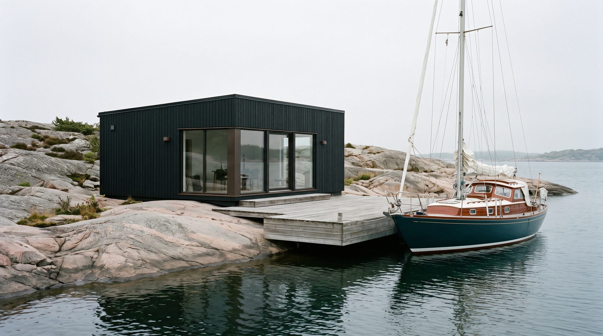
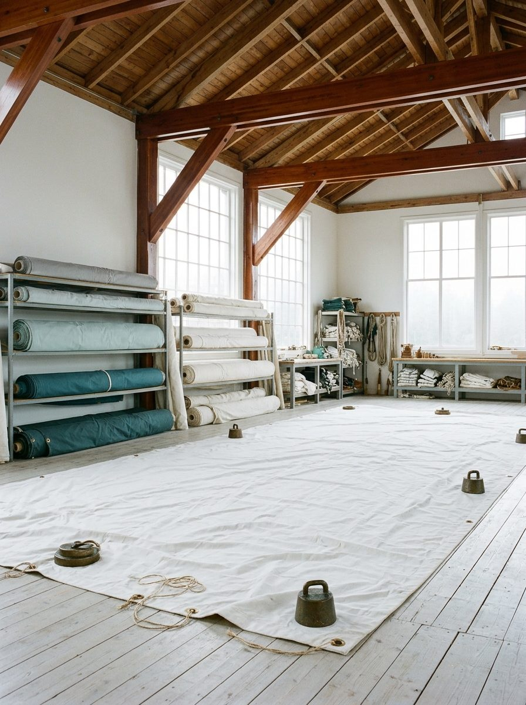
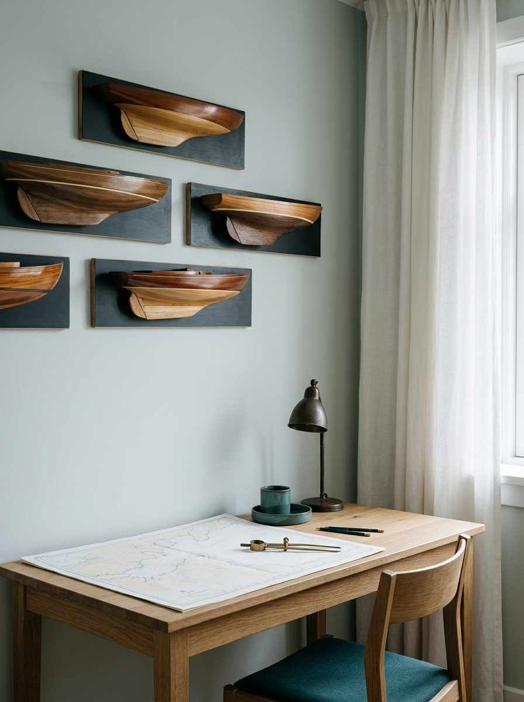
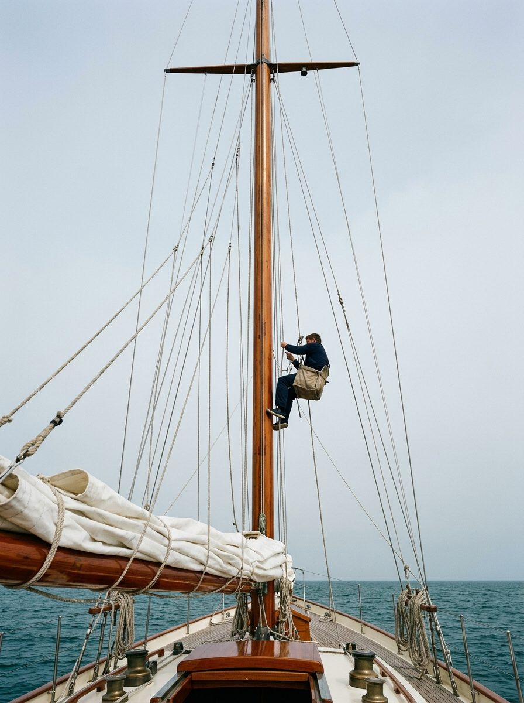

In plain words: yacht keeping, done by people who sail.
A small house for a limited circle of owners, built on craft, discretion and time on the water.
Talk to Halyard
A captain’s standard, rare on dry land
Halyard borrows its habits from the sea: a short watch list, a clear log and one person who answers for the boat.
We do not look for volume. New owners come to us through other owners, a conversation and a walk along the deck.
Each yacht has its own keeper, its own budget and its own calendar, kept as carefully as if the yacht were ours.
Halyard exists so that owning a wooden boat feels like sailing it, and nothing like worrying about it.

Twelve winters in the shed
Halyard began with Elin, a shipwright who grew tired of seeing good hulls lost to poor paperwork and late varnish.
She started with three yachts in a borrowed shed, then took on the whole fleet of a family on the west coast, from winter covers to summer crews.
The house is the natural next step: the same hands and the same rigour, opened to owners who expect both.

What holds
Halyard together
Owners join by recommendation, one at a time.
Nothing leaves the quay before it is ready.
One call, one keeper, no loose ends.
Logged, photographed and costed work.
Lines, varnish and canvas treated with respect.
The same person, season after season.
One crew, all trades, same quay
Halyard relies on people it employs and trains:
- rigging and spars
- varnish and paint
- engines and electrics
- charter hosting and linen
- skippers and delivery crews
Keeping every trade under one roof means steady quality and quick answers, without chasing outside contractors in July.

Complete care,
from first survey
to first sail
Season care,
all year round
You own a wooden yacht and want it ready whenever you are. We take charge of the whole year: winter storage, varnish, rig, engine and launch, planned and reported by one keeper.
DiscoverCharter,
run for you

Ideal if you would like your yacht to pay for its own upkeep. We run the charter from first enquiry to final rinse: pricing, guests, skippers, linen, cleaning and maintenance between weeks.
DiscoverRefit
& second life
for hulls

We find hulls worth saving, often before they reach the market, lead the restoration with our partner shipwrights and deliver a yacht that sails, holds its value and can be chartered from day one.
DiscoverKeeping rare boats, well and for a long time
Halyard has no wish to become the largest fleet on the coast. We would rather keep a few yachts so well that people row over to ask who looks after them.